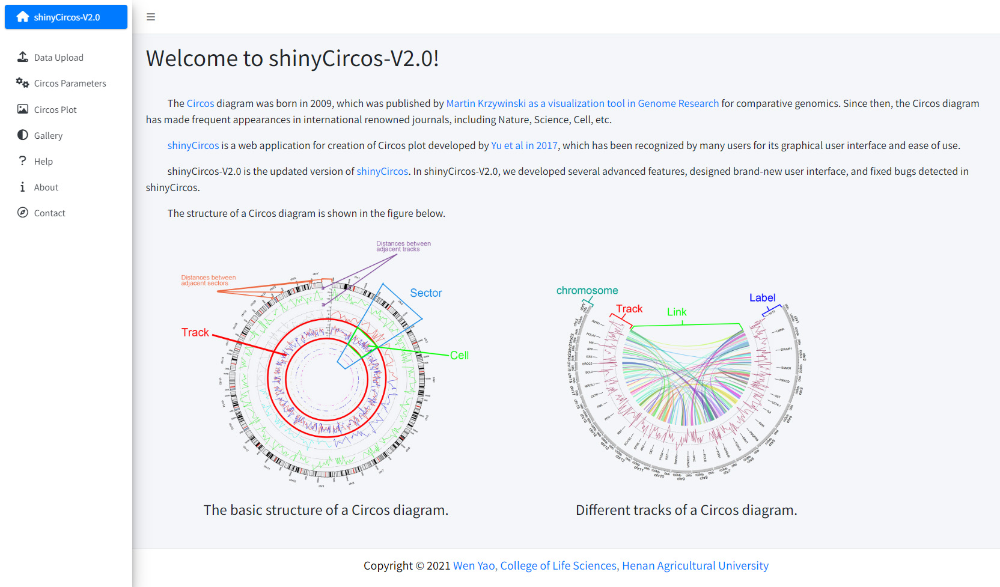
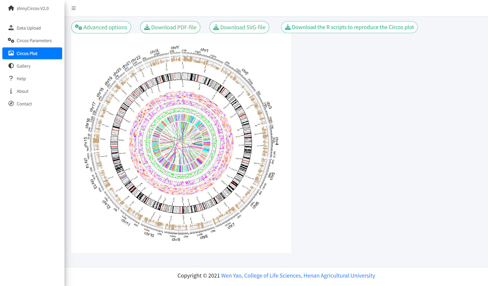
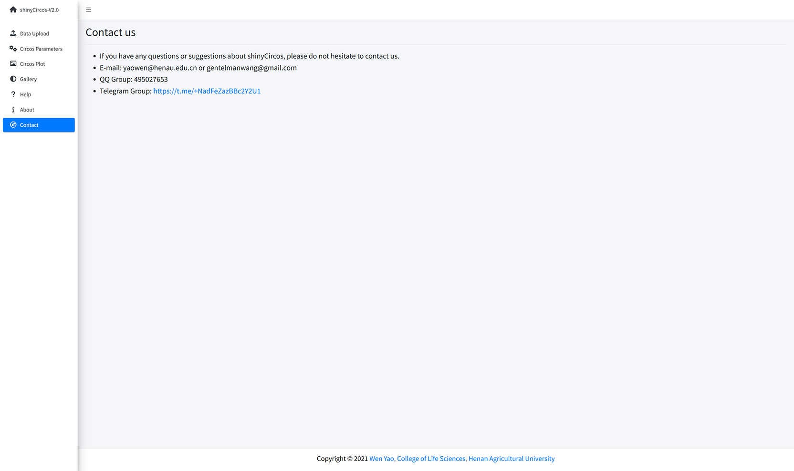
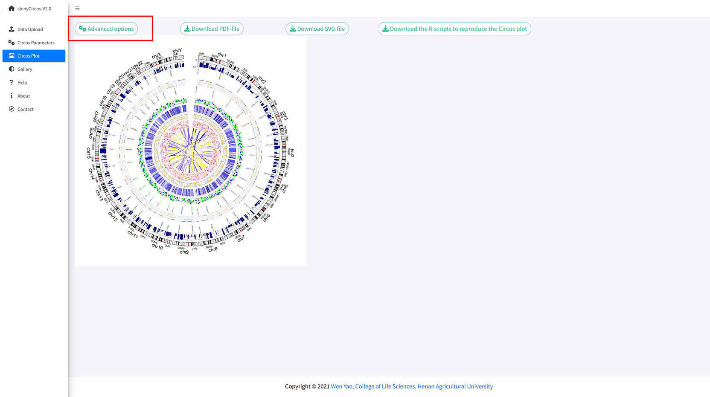
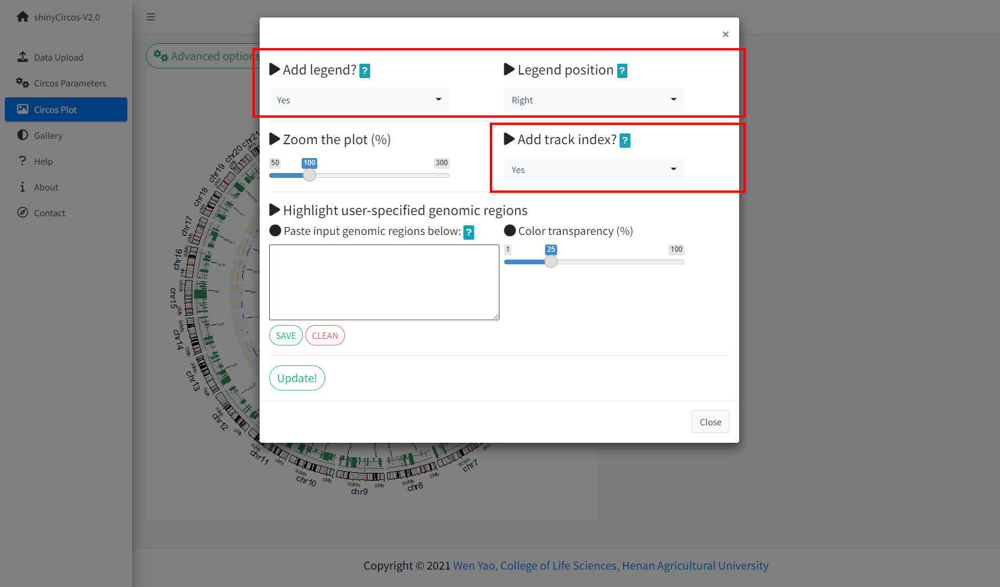
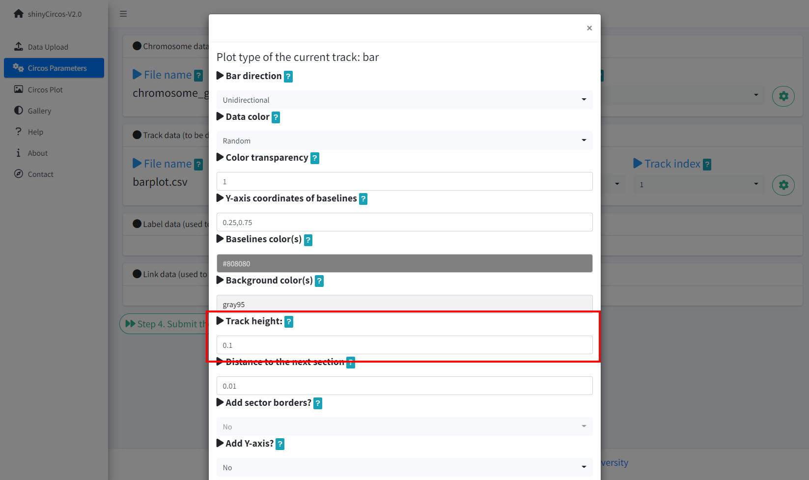
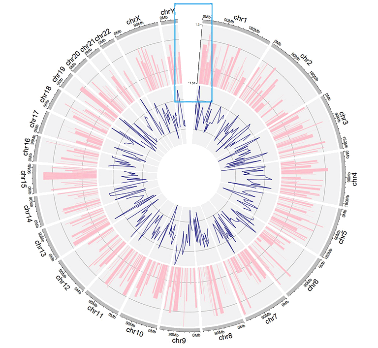
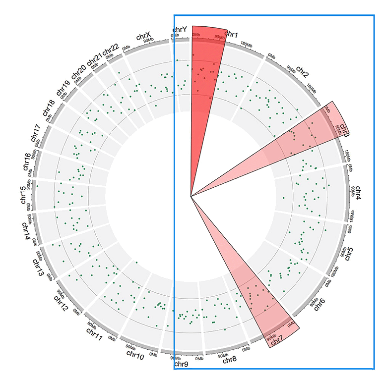

1.简介
shinyCircos-V2.0是一个可交互式创建Circos图的R/shiny应用程序。
源代码：https://github.com/YaoLab-Bioinfo/shinyCircos-V2.0
在线使用：https://venyao.xyz/shinyCircos-V2.0/
联系方式：gentelmanwang@gmail.com or yaowen@henau.edu.cn
shinyCircos 是由 Yu等人于 2017 年开发的用于绘制 Circos 图的网页应用程序，其交互界面和易用性得到了许多用户的认可。。 shinyCircos-V2.0 是shinyCircos的更新版本. 在shinyCircos-V2.0 中，我们开发了一些高级功能，设计了全新的用户界面，并修复了在shinyCircos 中检测到的错误。

在使用shinyCircos-V2.0之前，我们需要了解一个典型的Circos的结构，请您仔细阅读并熟悉图像各部分的名字，这样有助于您继续阅读并理解该帮助手册。

一个典型的Circos图的结构

一个典型的Circos图的不同"Track"
2.输入数据格式
如果您是第一次接触shinyCircos-V2.0，那么我建议您仔细阅读输入数据格式说明，否则可能会出现未知的错误。
我们建议您上传".csv"格式的文件到shinyCircos-V2.0中，因为相对于其他的文本文件，".csv"文件具有比较明确的标准,不容易在读取时产生问题。值得一提的是，列名对于shinyCircos-V2.0来说是十分重要的，并且前三列应为chr、start、end，分别代表染色体ID、起始位置、终止位置， 接下来我将会详细的展示不同输入数据的不同格式。
2.1 Chromosome data（用于定义 Circos 图的染色体）
Chromosome data是绘图时必不可少的一部分，它决定了不同的sector的名称和比例，没有它shinyCircos-V2.0将无法绘制出图形。 Chromosome data一共有两种，分别是General data和Cytoband data，它们的格式并不相同。
2.1.1 具有3列的general data
general data包含三列，分别是chr、start、end。如下图所示：
| chr | start | end |
|---|---|---|
| chr1 | 1 | 249250621 |
| chr2 | 1 | 243199373 |
| chr3 | 1 | 198022430 |
| chr4 | 1 | 191154276 |
| chr5 | 1 | 180915260 |
| chr6 | 1 | 171115067 |
| chr7 | 1 | 159138663 |
| chr8 | 1 | 146364022 |
general data

使用general data绘图时shinyCircos-V2.0默认会用灰色的track表示不同的染色体，在最外侧会展示染色体的名字和刻度标识：

输入数据为general data时的灰色track
2.1.2 具有5列的cytoband data
cytoband data包含五列,分别是chr、start、end、value1、value2，如下图所示：
| chr | start | end | value1 | value2 |
|---|---|---|---|---|
| chr1 | 1 | 2300000 | p36.33 | geng |
| chr1 | 2300000 | 5400000 | p36.32 | gpos25 |
| chr2 | 1 | 4400000 | p25.3 | geng |
| chr2 | 4400000 | 7100000 | p25.2 | gpos50 |
| chr3 | 1 | 2800000 | p26.3 | gpos50 |
| chr3 | 2800000 | 4000000 | p26.2 | geng |
| chr4 | 1 | 4500000 | p16.3 | gneg |
| chr4 | 4500000 | 6000000 | p16.2 | gpos25 |
cytoband data
cytoband data绘图时将会添加一个Ideogram track

输入数据为cytoband data时的Ideogram track
2.2 Track data（显示在 Circos 图的不同"Track"中）
Track data用来在Circos图中绘制不同的Track，不同类型的Track往往具有不同的输入格式，但是数据的前三列是固定的，分别是chr、strat、end。接下来将会展示不同类型的Track data。
2.2.1 bar
用来绘制柱形图的数据应该至少有四列，分别是chr、start、end和value，值得注意的是第四列的值可以是正数也可以是负数，柱形图有两种绘图类型，分别是Unidirectional和Bidirectional， 同时还支持输入数据中再添加一列颜色分类值，具体的区别见下方讲解。
Unidirectional数据可以用来绘制单向的柱形图，柱子的最小值就是value的最小值，可以为负数，即纵坐标的起始位点可以是任何值，如下图所示：
| chr | start | end | value |
|---|---|---|---|
| chr1 | 10382554 | 26901963 | 0.374 |
| chr1 | 26901963 | 30511288 | 0.084 |
| chr2 | 2129395 | 9774923 | 0.237 |
| chr2 | 14718126 | 15320740 | 0.529 |
| chr3 | 472933 | 7160480 | 0.477 |
| chr3 | 10972902 | 11789212 | 0.636 |
| chr4 | 8617827 | 16885659 | -0.831 |
| chr4 | 18135416 | 25567929 | 0.239 |
单向柱形图数据

单向柱形图
Bidirectional数据用来绘制双向的柱状图，一般来说，同一个区间往往有两个value，柱子默认从0开始绘制，如下图所示：
| chr | start | end | value |
|---|---|---|---|
| chr1 | 5622039 | 9110831 | 0.095 |
| chr1 | 5622039 | 9110831 | -0.405 |
| chr2 | 13669568 | 16275459 | 0.936 |
| chr2 | 13669568 | 16275459 | -0.436 |
| chr3 | 4777699 | 8367346 | 0.174 |
| chr3 | 4777699 | 8367346 | -0.326 |
| chr4 | 4969470 | 11023301 | 0.664 |
| chr4 | 4969470 | 11023301 | -0.164 |
双向柱形图数据

双向柱形图
颜色列代表着颜色的分组，比如a、b、c、d
| chr | start | end | value | color |
|---|---|---|---|---|
| chr1 | 2321390 | 22775301 | -0.525358698 | a |
| chr1 | 43812694 | 44287183 | 0.101162224 | a |
| chr3 | 10094726 | 13041378 | -0.117686062 | a |
| chr3 | 17700130 | 17853399 | 0.229028492 | a |
| chr4 | 58783476 | 66246991 | -0.866641798 | a |
| chr4 | 77375595 | 79033629 | -0.313168927 | b |
| chr9 | 5488989 | 10117165 | -0.309662277 | c |
| chr9 | 14069596 | 45956401 | 0.111702254 | c |
带有颜色列的柱形图数据

由颜色列调控颜色的柱形图
2.2.2 line
绘制折线图的数据应该至少包含四列，除此之外还可以添加其他的列来丰富折线图的绘制。
标准的折线图数据应该包含四列，分别是chr、start、end和value1，如下图所示：
| chr | start | end | value1 |
|---|---|---|---|
| chr1 | 788538 | 5571920 | 0.309 |
| chr1 | 6704086 | 10962288 | -0.075 |
| chr2 | 5331353 | 17190915 | 0.129 |
| chr2 | 27214061 | 37578483 | -0.796 |
| chr3 | 1424915 | 5127305 | -0.413 |
| chr3 | 10792280 | 11980906 | -0.096 |
| chr4 | 61966 | 10528434 | -1.224 |
| chr4 | 14526642 | 19266615 | 0.231 |
标准折线图数据

标准折线图
除了标准的四列数据外，还可以添加颜色列或是再添加一列value来在同一条track上绘制多条线。
| chr | start | end | value | color |
|---|---|---|---|---|
| chr1 | 2306857 | 8605927 | -0.207 | a |
| chr1 | 20851761 | 21889246 | 0.121 | a |
| chr4 | 97627526 | 102877458 | 0.259 | a |
| chr4 | 106904642 | 109386825 | -0.65 | b |
| chr14 | 84253948 | 92430157 | 0.396 | c |
| chr14 | 97757077 | 100917700 | -0.366 | c |
| chr15 | 2898612 | 7858243 | 0.917 | d |
| chr15 | 14718550 | 26144439 | -0.526 | d |
带有颜色列的折线图数据

由颜色列调控颜色的折线图
| chr | start | end | value1 | value2 |
|---|---|---|---|---|
| chr1 | 294540 | 4666160 | -0.66 | -0.596 |
| chr1 | 17589118 | 18065224 | -0.138 | -0.747 |
| chr2 | 6872874 | 16224260 | -0.77 | -0.403 |
| chr2 | 24936258 | 28070400 | 0.716 | 0.22 |
| chr3 | 503979 | 24719267 | 0.217 | -0.459 |
| chr3 | 24979219 | 43289811 | 0.226 | -0.185 |
| chr4 | 859776 | 2929166 | 0.738 | 0.602 |
| chr4 | 5923032 | 9091660 | -0.2 | -0.384 |
多列数值的折线图数据

有多条折线的折线图
2.2.3 point
绘制散点图的数据和绘制折线图的数据类似。
标准的散点图数据应该包含四列，分别为chr、start、end和value1，如下图所示：
| chr | start | end | value1 |
|---|---|---|---|
| chr1 | 1769292 | 1796134 | 0.339 |
| chr1 | 4881594 | 5495466 | 1.005 |
| chr2 | 5800619 | 8815540 | 0.088 |
| chr2 | 10440452 | 10893876 | -0.891 |
| chr3 | 41265 | 7536287 | -0.1 |
| chr3 | 9209200 | 12874260 | -0.032 |
| chr4 | 3571886 | 7801048 | -0.436 |
| chr4 | 24973615 | 30857176 | -0.106 |
标准的散点图数据

标准的散点图
数据中可以包含一列用来调控点的大小（过大的值可以会产生不可预料的后果）
| chr | start | end | value | cex |
|---|---|---|---|---|
| chr1 | 1326341 | 1845331 | -0.374 | 0.5 |
| chr1 | 9901462 | 15656953 | -0.321 | 0.3 |
| chr2 | 17619104 | 25624262 | -0.194 | 0.6 |
| chr2 | 26946941 | 27889388 | 0.27 | 0.6 |
| chr3 | 1720430 | 4389146 | -0.319 | 0.6 |
| chr3 | 6104592 | 7216808 | 0.315 | 0.6 |
| chr4 | 8327054 | 16538974 | 0.448 | 0.5 |
| chr4 | 29870261 | 39830090 | -0.005 | 1 |
带有“cex”列的散点图数据

具有不同大小的点的散点图
同样的，散点图一样支持使用颜色列来调控不同点的颜色（请使用合规的颜色值）
| chr | start | end | value | color |
|---|---|---|---|---|
| chr1 | 6098636 | 13915642 | 0.372 | a |
| chr1 | 42002814 | 45209039 | -0.253 | a |
| chr4 | 92963013 | 96656317 | -0.148 | a |
| chr4 | 107125173 | 107125346 | 0.75 | b |
| chr9 | 8290596 | 22658143 | -0.598 | c |
| chr9 | 24382136 | 34055254 | 0.279 | c |
| chrY | 30359053 | 32853733 | -0.286 | d |
| chrY | 34769699 | 39644200 | 0.343 | d |
带有“color”列的散点图数据

具有不同颜色的点的散点图
也可以添加一列来控制点的类型（pch的不同取值情况如下图）

pch的参考值
(图片来源：http://coleoguy.blogspot.com/2016/06/symbols-and-colors-in-r-pch-argument.html)
| chr | start | end | value | pch |
|---|---|---|---|---|
| chr1 | 8605110 | 17214753 | 0.208 | 1 |
| chr1 | 22124150 | 36435838 | 0.905 | 1 |
| chr3 | 121395059 | 124720880 | 0.269 | 1 |
| chr3 | 126119336 | 134480084 | 0.947 | 8 |
| chr7 | 46299973 | 47301871 | 0.019 | 13 |
| chr7 | 59003737 | 65956990 | -0.403 | 13 |
| chr11 | 128515663 | 132431158 | 0.146 | 16 |
| chr12 | 7434839 | 18272884 | 0.766 | 16 |
带有“pch”列的散点图数据

具有不同类型的点的散点图
这几个类型的调控列也可以任意组合
| chr | start | end | value | pch | cex |
|---|---|---|---|---|---|
| chr1 | 4049230 | 11358879 | -0.59 | 10 | 0.4 |
| chr1 | 18671867 | 29619034 | 0.442 | 10 | 0.7 |
| chr4 | 72761399 | 91691619 | 0.134 | 17 | 0.4 |
| chr4 | 101737149 | 102799485 | -0.025 | 17 | 0.9 |
| chr7 | 4065399 | 7750398 | -0.327 | 17 | 0.6 |
| chr7 | 9065662 | 15775923 | 0.174 | 17 | 0.2 |
| chr9 | 32282995 | 33499747 | 0.476 | 18 | 0.7 |
| chr9 | 54414502 | 54804733 | 0.396 | 18 | 0.4 |
带有“pch”、“cex”列的散点图数据

具有不同大小和不同类型的点的散点图
| chr | start | end | value | color | cex |
|---|---|---|---|---|---|
| chr1 | 8900700 | 9211013 | -0.6 | a | 0.3 |
| chr1 | 38733680 | 54945292 | 0.233 | a | 1.1 |
| chr5 | 25650709 | 32392960 | 0.409 | b | 0.3 |
| chr5 | 33011156 | 54462250 | -0.245 | b | 1.1 |
| chr7 | 86777790 | 89385025 | 0.006 | b | 0.9 |
| chr7 | 103848396 | 107618696 | -1.093 | b | 1 |
| chrY | 48564458 | 48770305 | 0.208 | d | 0.3 |
| chrY | 50570091 | 52373385 | 0.231 | d | 0.4 |
带有“color”、“cex”列的散点图数据

具有不同颜色和不同大小的点的散点图
| chr | start | end | value | color | pch |
|---|---|---|---|---|---|
| chr1 | 3768320 | 4851773 | -0.416 | a | 15 |
| chr1 | 5712552 | 10112216 | -0.41 | a | 15 |
| chr10 | 5831619 | 10981299 | 0.299 | b | 15 |
| chr10 | 13728053 | 15927681 | 0.025 | b | 15 |
| chr22 | 22254151 | 36401489 | 0.182 | c | 17 |
| chr22 | 40556634 | 47770670 | -0.011 | c | 17 |
| chrY | 30674719 | 39836594 | 0.101 | c | 17 |
| chrY | 52737371 | 53903116 | -0.003 | c | 17 |
带有“color”、“pch”列的散点图数据

具有不同颜色和不同类型的点的散点图
| chr | start | end | value | color | pch | cex |
|---|---|---|---|---|---|---|
| chr1 | 14053524 | 24878326 | -0.498 | a | 1 | 0.9 |
| chr1 | 29640089 | 49313488 | -0.565 | a | 1 | 1 |
| chr4 | 8408012 | 12767180 | -0.108 | b | 4 | 0.4 |
| chr4 | 22963697 | 41682972 | -0.45 | b | 4 | 0.9 |
| chr9 | 51441395 | 53095312 | 0.527 | c | 6 | 1.1 |
| chr9 | 65510881 | 69698456 | 0.127 | c | 6 | 1.1 |
| chrX | 143579620 | 144650695 | -0.388 | e | 20 | 0.7 |
| chrX | 147326182 | 151556373 | -0.386 | e | 20 | 0.7 |
同时带有“color”、“pch”和“cex”列的散点图数据

同时具有不同颜色、不同类型和不同大小的点的散点图
当然，散点图也能像折线图一样同时绘制多列数据
| chr | start | end | value1 | value2 |
|---|---|---|---|---|
| chr1 | 7224218 | 16393864 | -0.196 | -0.955 |
| chr1 | 21093451 | 25392112 | 0.128 | 0.275 |
| chr3 | 14909280 | 22502495 | 0.421 | -0.185 |
| chr3 | 24704666 | 26117987 | -0.102 | 0.637 |
| chr4 | 35556750 | 37025119 | 0.063 | 0.848 |
| chr4 | 39947625 | 63436481 | 0.28 | -0.262 |
| chrX | 110739650 | 115294899 | 0.388 | 1.074 |
| chrX | 118586060 | 119613523 | 0.151 | 0.784 |
带有多列“value”的散点图数据

具有两个“value”的散点图
2.2.4 ideogram
shinyCircos-V2.0也可以将染色体条带绘制在任意“Track”上，染色体条带数据的格式和绘制染色体的细胞带数据数据是一样的
| chr | start | end | value1 | value2 |
|---|---|---|---|---|
| chr1 | 1 | 2300000 | p36.33 | gneg |
| chr1 | 2300000 | 5400000 | p36.32 | gpos25 |
| chr2 | 1 | 4400000 | p25.3 | gneg |
| chr2 | 4400000 | 7100000 | p25.2 | gpos50 |
| chr3 | 1 | 2800000 | p26.3 | gpos50 |
| chr3 | 2800000 | 4000000 | p26.2 | gneg |
| chr4 | 1 | 4500000 | p16.3 | gneg |
| chr4 | 4500000 | 6000000 | p16.2 | gpos25 |
染色体条带数据

染色体条带
2.2.5 rect-discrete
矩形图可以理解为单行的热图，离散型的矩形图数据包含四列，分别为：chr、strat、end和group，如下图所示
| chr | start | end | group |
|---|---|---|---|
| chr1 | 1465 | 5857186 | b |
| chr1 | 6005405 | 7051583 | c |
| chr3 | 13 | 3831804 | d |
| chr3 | 3989861 | 11612588 | g |
| chr5 | 56 | 2698252 | h |
| chr5 | 2719598 | 9370038 | c |
| chr7 | 146 | 4643362 | e |
| chr7 | 4723845 | 16418898 | e |
离散型矩形图数据

离散型矩形图
2.2.6 rect-gradual
连续型的矩形图数据包含四列，分别为：chr、strat、end和group，如下图所示
| chr | start | end | value |
|---|---|---|---|
| chr1 | 1 | 6657591 | 0.034 |
| chr1 | 9792529 | 20706145 | -0.527 |
| chr3 | 651 | 27839332 | -0.532 |
| chr3 | 28591880 | 29683518 | -0.156 |
| chr5 | 407 | 16490429 | 0.281 |
| chr5 | 17056645 | 32303717 | 0.485 |
| chr7 | 3226 | 7227722 | -0.482 |
| chr7 | 7387758 | 13632289 | 0.496 |
连续型矩形图数据

连续型矩形图
2.2.7 heatmap-discrete
离散型的热图数据至少包含四列，分别为：chr、strat、end和group1，group列可以有多个，如下图所示
| chr | start | end | group1 | group2 | group3 | group4 | group5 | group6 | group7 | group8 | group9 | group10 |
|---|---|---|---|---|---|---|---|---|---|---|---|---|
| chr1 | 20621957 | 21209624 | d | a | a | e | e | c | d | g | g | d |
| chr1 | 42967726 | 53028972 | f | b | h | b | g | c | b | h | h | d |
| chr3 | 17138030 | 40796035 | f | h | c | f | a | a | g | h | h | h |
| chr3 | 57219142 | 60650338 | g | b | g | f | b | g | f | f | b | e |
| chr5 | 8910650 | 10080670 | f | c | e | c | b | e | h | b | a | g |
| chr5 | 13535538 | 32715550 | h | h | h | e | d | c | e | b | h | c |
| chr7 | 9333245 | 11185543 | e | e | g | d | c | f | h | f | f | d |
| chr7 | 12717294 | 27297461 | g | a | b | d | a | d | a | g | f | g |
离散型热图数据

离散型热图
2.2.8 heatmap-gradual
连续型的热图数据至少包含四列，分别为：chr、strat、end和value1，value列可以有多个，如下图所示
| chr | start | end | value1 | value2 | value3 | value4 | value5 | value6 | value7 | value8 | value9 | value10 |
|---|---|---|---|---|---|---|---|---|---|---|---|---|
| chr1 | 20621957 | 21209624 | -0.672 | -0.271 | -0.001 | 0.486 | -0.986 | -0.37 | 0.48 | 0.38 | 0.158 | 0.108 |
| chr1 | 42967726 | 53028972 | -0.147 | 0.387 | 1.332 | 0.182 | 0.16 | -0.132 | 0.234 | -0.089 | -0.918 | 0.397 |
| chr3 | 17138030 | 40796035 | 0.046 | 0.028 | -0.691 | -0.341 | 1.011 | -0.242 | -0.027 | -0.273 | 0.276 | -1.028 |
| chr3 | 57219142 | 60650338 | -0.514 | 0.429 | 0.29 | -0.356 | -0.025 | 0.537 | -0.368 | 0.486 | 0.392 | -0.085 |
| chr5 | 8910650 | 10080670 | 0.175 | -0.855 | 0.934 | -0.914 | 0.879 | -0.181 | -0.512 | -0.074 | 0.302 | 0.04 |
| chr5 | 13535538 | 32715550 | 0.088 | 0.005 | 1.005 | -0.076 | -0.007 | 0.371 | 0.494 | -0.236 | 0.219 | -0.422 |
| chr7 | 9333245 | 11185543 | 0.442 | 0.38 | -1.139 | -0.352 | -0.338 | -0.021 | -0.118 | -0.11 | 0.379 | -0.38 |
| chr7 | 12717294 | 27297461 | -0.404 | 0.264 | 0.131 | 0.24 | -0.565 | 0.092 | 0.21 | -0.739 | 0.855 | 0.785 |
连续型热图数据

连续型热图
2.2.9 stack-point
shinyCircos-V2.0还可以绘制堆叠的散点图，其数据应包含四列，分别的：chr、start、end和stack，值得注意的是，stack列代表了数据的分组情况，同一组会被绘制在一行，如下图所示
| chr | start | end | stack |
|---|---|---|---|
| chr1 | 11589909 | 40133642 | a |
| chr1 | 52614734 | 59580026 | a |
| chr5 | 28358375 | 28943627 | a |
| chr5 | 48623024 | 64086871 | a |
| chr1 | 37080716 | 41662004 | b |
| chr1 | 87453098 | 89776607 | b |
| chr5 | 6608219 | 8525932 | b |
| chr5 | 39324082 | 40131031 | b |
堆叠散点图数据

堆叠散点图
2.2.10 stack-line
堆叠的线图和堆叠的散点图类似，其数据也应包含四列，分别的：chr、start、end和stack，值得注意的是，stack列代表了数据的分组情况，同一组会被绘制在一行，如下图所示
| chr | start | end | stack |
|---|---|---|---|
| chr1 | 20646359 | 46383846 | a |
| chr5 | 2723623 | 5392944 | a |
| chr9 | 4943376 | 8560799 | a |
| chr13 | 33868717 | 71744746 | a |
| chr1 | 16051196 | 33970939 | b |
| chr5 | 89644 | 46679748 | b |
| chr9 | 29528190 | 72792793 | b |
| chr13 | 22993703 | 23901290 | b |
堆叠线图数据

堆叠线图
2.3 Label data
标签数据是用来注释基因组或解释track的数据，将在在图上呈现出一个个的标签，其数据应该包含四列或五列,如下图所示
四列标签数据用于绘制一般的lable，他们的颜色是统一的
| chr | start | end | label |
|---|---|---|---|
| chr1 | 3698046 | 3736201 | TP73 |
| chr1 | 156114670 | 156140089 | LMNA |
| chr5 | 42423775 | 42721878 | GHR |
| chr5 | 150113839 | 150155859 | PDGFRB |
| chr9 | 116153792 | 116402321 | PAPPA |
| chr9 | 21967752 | 21975133 | CDKN2A |
| chr11 | 34438925 | 34472060 | CAT |
| chr11 | 108222832 | 108369099 | ATM |
label data

Circos图的label
五列的label data用于绘制复杂的标签，它们的颜色与颜色列的颜色值一一对应
| chr | start | end | label | color |
|---|---|---|---|---|
| chr1 | 3698046 | 3736201 | TP73 | red |
| chr1 | 156114670 | 156140089 | LMNA | #FF000080 |
| chr5 | 42423775 | 42721878 | GHR | blue |
| chr5 | 150113839 | 150155859 | PDGFRB | blue |
| chr9 | 116153792 | 116402321 | PAPPA | blue |
| chr9 | 21967752 | 21975133 | CDKN2A | green |
| chr13 | 48303747 | 48481890 | RB1 | green |
| chr14 | 75278778 | 75282234 | FOS | green |
带有颜色列的label data

带有不同颜色标签的示例 Circos 图
2.4 Links data
link数据至少应该包含六列，分别代表着连接线的头和尾，具体格式如下图所示
| chr1 | start1 | end1 | chr2 | start2 | end2 |
|---|---|---|---|---|---|
| chr20 | 37720821 | 47419255 | chr5 | 162124929 | 168434522 |
| chr8 | 76179361 | 83302661 | chr1 | 162049212 | 213797379 |
| chr2 | 38375277 | 49805216 | chr11 | 19060895 | 36294068 |
| chr2 | 120255288 | 134792772 | chr13 | 62362083 | 71502856 |
| chr4 | 95199225 | 102508113 | chr13 | 16327889 | 24910342 |
| chr15 | 83769167 | 83992136 | chr10 | 83790329 | 119443216 |
| chr19 | 4720005 | 9699881 | chr5 | 128543229 | 133838939 |
| chr7 | 69144425 | 82831719 | chr14 | 31274513 | 45025723 |
标准的link数据

Circos图的link
除了必要的六列数据外，还可以再加一列用来控制link的颜色，支持两种格式来调整link的颜色，离散值和连续值，如下图所示
| chr1 | start1 | end1 | chr2 | start2 | end2 | color |
|---|---|---|---|---|---|---|
| chr20 | 37720821 | 47419255 | chr5 | 162124929 | 168434522 | c |
| chr8 | 76179361 | 83302661 | chr1 | 162049212 | 213797379 | c |
| chr2 | 38375277 | 49805216 | chr11 | 19060895 | 36294068 | b |
| chr2 | 120255288 | 134792772 | chr13 | 62362083 | 71502856 | a |
| chr4 | 95199225 | 102508113 | chr13 | 16327889 | 24910342 | a |
| chr15 | 83769167 | 83992136 | chr10 | 83790329 | 119443216 | b |
| chr19 | 4720005 | 9699881 | chr5 | 128543229 | 133838939 | b |
| chr7 | 69144425 | 82831719 | chr14 | 31274513 | 45025723 | c |
带有离散颜色值的link数据

Circos图的link（离散颜色值）
| chr1 | start1 | end1 | chr2 | start2 | end2 | color |
|---|---|---|---|---|---|---|
| chr20 | 37720821 | 47419255 | chr5 | 162124929 | 168434522 | 217 |
| chr8 | 76179361 | 83302661 | chr1 | 162049212 | 213797379 | 7 |
| chr2 | 38375277 | 49805216 | chr11 | 19060895 | 36294068 | 206 |
| chr2 | 120255288 | 134792772 | chr13 | 62362083 | 71502856 | 27 |
| chr4 | 95199225 | 102508113 | chr13 | 16327889 | 24910342 | 189 |
| chr15 | 83769167 | 83992136 | chr10 | 83790329 | 119443216 | 161 |
| chr19 | 4720005 | 9699881 | chr5 | 128543229 | 133838939 | 89 |
| chr7 | 69144425 | 82831719 | chr14 | 31274513 | 45025723 | 13 |
带有连续颜色值的link数据

Circos图的link（连续颜色值）
3.在线或在本地计算机上使用shinyCircos
3.1 在线使用shinyCircos-V2.0
在线使用shinyCircos-V2.0的网址是https://venyao.xyz/shinyCircos-V2.0/。当用户首次访问shinyCircos-V2.0的时候，网站的载入速度可能会比较慢，一方面可能是网络的问题，另一方面，服务器为了节约资源，在网站处于非活动状态时， shinyCircos-V2.0会进入休眠节约资源，这就导致了一段时间后的首次访问加载速度会比较慢。因此，第一次访问可能需要一些时间，一旦网站被激活，shinyCircos-V2.0就可以被流畅、方便地使用。
3.2 shinyCircos-V2.0的界面
shinyCircos-V2.0应用程序包含8个主菜单：“shinyCircos-V2.0”，“Data Upload”，“Circos Parameters”，“Circos Plot”，“Gallery”，“Help”，“About”和“Contact”（见下图）。“shinyCircos-V2.0”菜单列出了shinyCircos-V2.0应用程序当前版本已经对Circos图的基本介绍。
shinyCircos-V2.0的主页面
“Data Upload”菜单允许用户上传输入数据或是载入示例数据（如下图）。

选择数据来源
不同的输入数据将会呈现不同的界面，若选择“upload data”，上传数据后将会呈现数据分类界面（如下图），将数据拖拽入合适的框中后，点击“Save data”，接下来可以继续上传数据或是点击“Submit！”，应用将会在检查数据无误后跳转到下一个界面。

自行上传数据
若选择“sample data”，则用户可以选择示例数据集点击“Submit！”(如下图)，应用将会跳转到下一个界面。

使用示例数据
“Circos Parameters”菜单将会罗列所有用户上传的数据或是加载的示例数据(如下图)，加载示例数据时也会一并加载参数配置，Circos Parameters”菜单有四个板块，分别是Chromosome data、Track data、Label data、Links data，对应上一个页面不同的分类框，用户可以点击文件名后的小眼睛预览数据，也可以点击每一行最后的那个小齿轮来进行参数的配置，所有参数配置完毕后用户可以点击“Submit！”按钮进行绘图，同时应用程序将检查参数配置是否合理，如无错误则跳转到“Circos Plot”菜单（注：跳转的过程可能不会很流畅，这是因为程序已经开始绘制图像了）。
Circos Parameters界面
“Circos Plot”菜单会根据用户的输入数据和参数选择输出对应图像，并且提供下载和微调参数，用户可以最后对图像进行调整，如添加图例，高亮区域等(如下图)，调整后不要忘了点击“Updata”更新图像。

Circos Plot界面
在shinyCircos-V2.0应用程序的“Gallery”菜单中列出了30个使用shinyCircos-V2.0创建的示例图形(如下图)。同时提供了用于生成每个示例图的数据集以供下载，其中包含所有输入文件，每个输入文件都被合理命名，指示了数据集中每个文件对应的轨道和绘图类型。前十个示例图形的示例数据和“Data Upload”界面提供的示例文件配置相同。

Gallery界面
在shinyCircos-V2.0应用程序的“Help”菜单中我们详细编写了软件的帮助文档，用户可根据目录查阅对应的部分进行学习，支持中英文切换，同时也支持下载。

Help界面
shinyCircos-V2.0的“About”菜单中我们声明了所使用的R软件包以及我们的详细信息。

About界面
用户可以在shinyCircos-V2.0的“Contact”菜单中找到我们的联系方式。

Contact界面
3.3 在个人电脑上安装使用shinyCircos-V2.0
用户可以选择在个人电脑(Windows、Mac或Linux)上安装和运行shinyCircos-V2.0，而无需将数据上传到在线服务器。shinyCircos-V2.0是跨平台的应用，即shinyCircos-V2.0可以安装在任何具有可用R环境的平台上。shinyCircos-V2.0的安装包括三个步骤。
步骤1：安装R和RStudio
请查看CRAN (https://cran.r-project.org/)以了解R的安装过程。
步骤2：安装R/Shiny包和shinyCircos-V2.0需要的其他R包
使用RStudio启动一个R会话并运行以下代码行 ：
# try an http CRAN mirror if https CRAN mirror doesn't work
install.packages("shiny")
install.packages("circlize")
install.packages("bs4Dash")
install.packages("DT")
install.packages("RColorBrewer")
install.packages("shinyWidgets")
install.packages("data.table")
install.packages("shinyBS")
install.packages("sortable")
install.packages("shinyjqui")
install.packages("shinycssloaders")
install.packages("colourpicker")
install.packages("gridBase")
install.packages("BiocManager")
BiocManager::install("ComplexHeatmap")
步骤3：运行shinyCircos-V2.0应用程序
使用RStudio启动R会话并运行以下代码行：
shiny::runGitHub("shinyCircos-V2.0", "YaoLab-Bioinfo")
此命令将从GitHub下载shinyCircos-V2.0的源代码到您计算机的临时目录中，然后在web浏览器中启动shinyCircos-V2.0应用程序。一旦网页浏览器关闭，下载的shinyCircos-V2.0代码将从您的电脑中删除。下次在RStudio中运行这个命令时，它将再次从GitHub下载shinyCircos-V2.0的源代码到一个临时目录。这个过程十分麻烦，因为从GitHub下载shinyCircos-V2.0的代码需要一些时间。
建议用户将shinyCircos-V2.0的源代码从GitHub下载到您电脑的一个固定目录，如Windows上的“E:\apps”，按照下图所示的步骤，一个名为“shinyCircos-V2.0-master.zip”的zip文件将下载到您的计算机中。将此文件移动到“E:\apps”并解压缩此文件。然后在“E:\apps”中会生成一个名为“shinyCircos-V2.0-master”的目录。脚本“server.R”和“ui.R”可以在“E:\apps\ shinyCircos-V2.0-master”中找到。然后，您可以通过在RStudio中运行以下几行脚本来启动shinyCircos-V2.0应用程序。

从GitHub下载源代码
library(shiny)
runApp("E:/apps/shinyCircos-V2.0-master", launch.browser = TRUE)
然后，shinyCircos-V2.0应用程序将在计算机的默认浏览器中打开。
4 利用shinyCircos-V2.0绘制Circos图的步骤
用户可以使用shinyCircos-V2.0 应用程序来创建Circos图。制作Circos图时，必须输入定义基因组中每条染色体长度的文件，以及若干个沿基因组排布的输入数据。在本节中，我们将演示使用shinyCircos-V2.0 中的示例数据集，创建Circos图的所有基本步骤。
4.1 利用shinyCircos-V2.0绘制Circos图的基本步骤
步骤1：准备并上传定义基因组长度的“Chromosom data”
基因组数据是必须输入的文件，它定义了Circos图的框架即“Sector”的比例（示例数据集可以在解压后的源文件www\example_data中获得)。 基因组数据是一个包含三列或五列的文本文件，一般数据为三列，细胞带数据为五列。 基因组数据的详细格式在前文的“输入数据格式”部分中有详细说明。
现在，我们已经准备好了这个文件并将它存储在磁盘上（例如Windows上的“E:/”）。 接下来，我们需要通过shinyCircos-V2.0应用程序中“Data Upload”菜单将此文件上传到shinyCircos-V2.0应用程序中，数据来源选择“upload data”（如下图）。

上传染色体数据
步骤2：上传环形排布的“Track data”
用户可以上传若干个数据集，沿着步骤1中上传的基因组数据环形排布。“Data Upload”菜单的分类框中的“Track data”框就是为了这个目的而提供的（见上图）。 在这里，我们使用两个输入数据集(barplot.csv和line.csv) 来演示这个过程。用来创建不同类型“Track”的输入文件的详细格式前文的“输入数据格式”部分中有详细说明。首先，我们准备了两个文件并将它们存储在磁盘上（例如，windows上的“E:/”）。 要将文件“barplot.csv”和“line.csv”上传到软件中，然后将其拖拽到“Track data”中，依次点击“Save data”和 “Submit！”。
步骤3：为每个输入数据集设置“Track”位置和绘图类型
默认情况下，拖拽入选择框的顺序就是绘制“Track”的顺序，每个输入数据集的默认绘图类型为“point”。 因为我们希望使用文件“barplot.csv”创建条形图，所以我们需要将文件“barplot.csv”对应的“Plot type”设置为“bar” (如下图)，同样的“line.csv”对应的“Plot type”设置为“line”。

shinyCircos-V2.0的参数设置界面
步骤4：点击“Submit!”按钮绘制图形
所有输入数据集成功上传到shinyCircos-V2.0 应用程序并正确设置轨道位置和绘图类型后，我们需要单击“Circos Parameters” 菜单底部的“Submit!”按钮，告诉shinyCircos-V2.0去绘制图形。 默认情况下，在绘制图形时，shinyCircos-V2.0将使用随机颜色或者预定义的颜色。
4.2 通过替换一个或多个输入数据集来更新 Circos 图
Circos图通常由分布在不同轨道上的几种基本类型的图形组成。每个图形都是使用用户上传的输入数据集创建的。 有时，我们可能需要替换其中一个或多个输入文件，这样我们就可以更新单个基因组图形的某些组成部分，而无需重新创建整个图形。 例如，我们想用一个新的输入文件“rect_discrete.csv”来替换Track2的“line.csv”来创建离散型矩形图。 为了达到这个目的，我们可以前往“Data Upload”中将“rect_discrete.csv”上传到软件中，将“Track data”分类框中的“line.csv”将替换为“rect_discrete.csv”，将原本的“line.csv”拖动到“Garbage”分类框中，然后依次点击“Save data” 、“Submit！”。 同时，我们需要将新导入的数据的绘图类型设置为“rect_discrete”。 最后，我们需要点击“Circos Parameters”面板底部的“Go!”按钮，告诉shinyCircos-V2.0更新相应的绘图结果。
4.3 以PDF或SVG格式下载创建的单个基因组图形
生成Circos图形后，用户可以使用“Circos Plot”菜单面板上方的小部件“Download PDF-file”和“Download SVG-file”下载PDF或SVG格式的绘图结果(如下图)。默认情况下，下载的两个文件分别命名为“shinyCircos.pdf”和“shinyCircos.svg”。 下载的PDF文件“shinyCircos.pdf”可以在Adobe Acrobat中打开，下载的SVG文件“shinyCircos.svg”可以在Google Chrome浏览器中打开，我们不建议您直接右键保存图片，为了保证清晰度，我们建议您使用PDF文件存储图像然后再转换为位图。

图片下载
4.4 利用shinyCircos-V2.0绘制复杂Circos图的完整步骤
使用shinyCircos-V2.0可以创建10种不同类型的图形，包括point, line, bar, stack-line,stack-point,rect-gradual, rect-discrete, heatmap-gradual, heatmap-discrete 和 ideogram。要创建有Circos图，至少需要一个输入数据文件，即定义基因组长度的基因组数据文件，这样输出的图形只有染色体部分。在这一节中，我们将展示绘制Circos图的关键步骤（如下图）。不同的绘图类型和具体的绘图参数在此不做赘述，用户可以参考示例数据进行学习。
步骤1：

上传所有数据并正确归类
步骤2：
为相应的数据选择正确的数据类型
步骤3：

在弹出菜单中为柱状图选择绘制纵坐标轴，设之完成后进行绘图
步骤4：

得到Circos图后对其进行高级设置
步骤5：

为Circos图选择添加图例且图例在右侧，然后选择添加Track索引，之后点击“Updata”更新Circos图
步骤6：

得到带有索引和图例的Circos图
步骤7：

继续在“Advanced options”菜单中设置高亮区域，在左侧文本框中输入想要高亮显示的位置，然后选择透明度，点击“SAVE”按钮检测输入数据是否合规，没有问题后点击“Update”更新Circos图
步骤8：

最后，得到一个复杂的Circos图，此时可以将Circos图保存为PDF或SVG
5 修饰Circos图的绘图选项
“Circos Parameters”菜单的每行数据的右侧小齿轮按钮，用户点击后将会弹出具体参数的提示框，用户可以进行个性化设置，比如Track的高度、间隔、各部分的颜色等等。下面将演示其中一些选项的设置。
5.1 Track高度
shinyCircos-V2.0的默认Track高度只有0.1，即为单位圆半径的5%，这个数值可能并不合适，所以需要用户进行调整，Track高度的调整非常简单，只需要用户点击对应Track数据后的齿轮图标，在弹出式菜单中将“Track height”进行调整即可(如下图)。

调整“Track”的高度
5.2 y坐标轴
shinyCircos-V2.0增加了在track上添加y轴的功能，这样可以显示出y轴的范围，用户可以在弹出参数框中的“Add y-axis”中选择“yes”然后更新绘图即可得到添加过y坐标轴的图像（如下图）。

添加y坐标轴

带有y坐标轴的Circos图
5.3 设置不同“Track”之间的间隔
在使用shinyCircos-V2.0的过程中，用户可以根据需要对不同track的间距进行调整，用户可以在弹出参数框中的“Distance to the next track”中输入适当数值后点击“SUSBMIT！！”按钮按照当前配置绘图（如下图）。

调整“Track”间隙

不同的track间隙
5.4 添加“Cell”的边框
在shinyCircos-V2.0中，用户可以给不同的“Track”添加边框，以此来强调某个“Track”，用户可以在弹出参数框中的“Add borders”中输入适当数值后点击“SUSBMIT！！”按钮按照当前配置绘图（如下图）。

添加单元格边框

带有边框的“Cell”
5.5 修改“Track”的背景颜色
在shinyCircos-V2.0中，用户可以调整不同的“Track”的背景颜色（部分绘图类型不支持背景颜色的调整），以此来给“Track”分组，用户可以在弹出参数框中的“Background color(s)”中选择适当的颜色或是输入适当的数值来调整“Track”的颜色，调整完毕后点击“SUSBMIT！！”按钮按照当前配置绘图（如下图）。

更改“Track”的背景颜色

不同背景颜色的“Track”
5.6 设置不同“Sector”之间的间距
在shinyCircos-V2.0中，用户可以在染色体数据的参数调整页面调整每个“Sector”之间的间距，只需要输入数值就可以很灵活的调整每个“Sector”之间的间距，调整完毕后点击“SUSBMIT！！”按钮按照当前配置绘图（如下图）。

调整Circos图的“Gap”宽度

Circos图的“Gap”
6 高级功能
相对于旧版的shinyCircos，除了界面和使用逻辑上的改动，我们还对部分功能进行了改进，增加了部分图形图例的支持，支持了高亮区域等。
6.1 添加图例
当用户绘制了“stack-line”、“stack-point”、“heatmap-gradual”、“heatmap-discrete”、“rect-gradual”和“rect-discrete”这六种类型的“Track”时，用户可以点击“Circos Plot”菜单的“Advance”按钮来添加图例，支持将图例绘制在Circos图的底部或右侧（见下图）。

添加图例

Circos图的图例
6.2 高亮特定基因组区域
新版的shinyCircos-V2.0支持高亮部分区域，帮助用户着重显示部分区域或是分类部分“Sector”，有助于用户用户按照自己的需要展示自己的数据。用户可以点击“Circos Plot”菜单的“Advance”按钮来添加高亮显示区域。如图所示，支持三种颜色输入格式，当输入带有透明度的16进制颜色代码时，下方的透明度选择将不被套用。

添加高亮区域

带有高亮区域的Circos图
6.3 调整图像大小
shinyCircos-V2.0支持对图像的大小进行调整，用户可以很轻松的调整图像的高和宽。（如下图）

调整Circos图的大小
6.4 添加“Track index”
“Track index”是“Track”的索引，可以为不同的“Track”添加标号方便用户进行后续的注释。用户可以点击“Circos Plot”菜单的“Advance”按钮然后在“Add track index”处选择是否添加“Track”的索引（如下图）。

添加“Track index”

带有“Track index”的Circos图
目录
1.简介
2.输入数据格式
2.1 chromosome 数据
2.1.1 一般数据
2.1.2 细胞带数据
2.2 track 数据
2.2.1 bar
2.2.2 line
2.2.3 point
2.2.4 ideogram
2.2.5 rect-discrete
2.2.6 rect-gradual
2.2.7 heatmap-discrete
2.2.8 heatmap-gradual
2.2.9 stack-point
2.2.10 stack-line
2.3 label 数据
2.4 links 数据
3.使用帮助
3.1 在线使用shinyCircos-V2.0
3.2 shinyCircos-V2.0的界面
3.3 在个人电脑上安装使用shinyCircos-V2.0
步骤1：安装R和RStudio
步骤2：安装R/Shiny包和shinyCircos-V2.0需要的其他R包
步骤3：运行shinyCircos-V2.0应用程序
4 利用shinyCircos-V2.0绘制Circos图
4.1 创建Circos图的基本步骤
步骤1：准备并上传定义基因组长度的"chromosome data"
步骤2：上传环形排布的"Track data"
步骤3：为每个输入数据集设置"Track"位置和绘图类型
步骤4：点击"Submit!"按钮绘制图形
4.2 替换一个或多个用于绘制"Track"的输入数据集来更新Circos图
4.3 以PDF或SVG格式下载创建的单个基因组图形
4.4 使用shinyCircos-V2.0绘制复杂Circos图的步骤
步骤1：上传数据
步骤2：选择数据类型
步骤3：在弹出式菜单中为Track设置参数
步骤4：得到初步的Circos图
步骤5：设置图例和Track索引
步骤6：预览
步骤7：设置高亮区域
步骤8：得到复杂的Circos图
5 修饰Circos图的绘图选项
5.1 "Track"高度
5.2 y坐标轴
5.3 相邻"Track"之间的间隔
5.4 "Cell"的边框
5.5 单个"Track"的背景颜色
5.6 不同"Sector"之间的间距
6 高级功能
6.1 添加图例
6.2 高亮特定基因组区域
6.3 调整图像大小
6.4 添加"Track index"